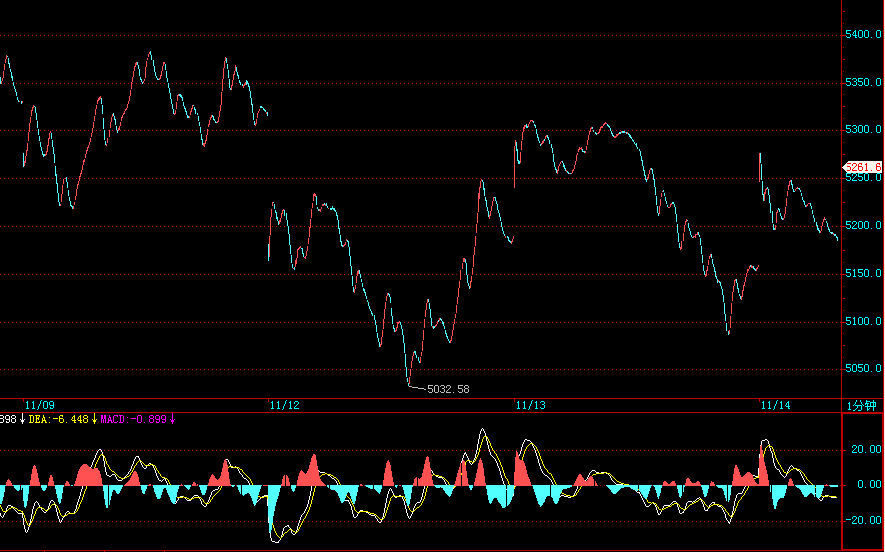
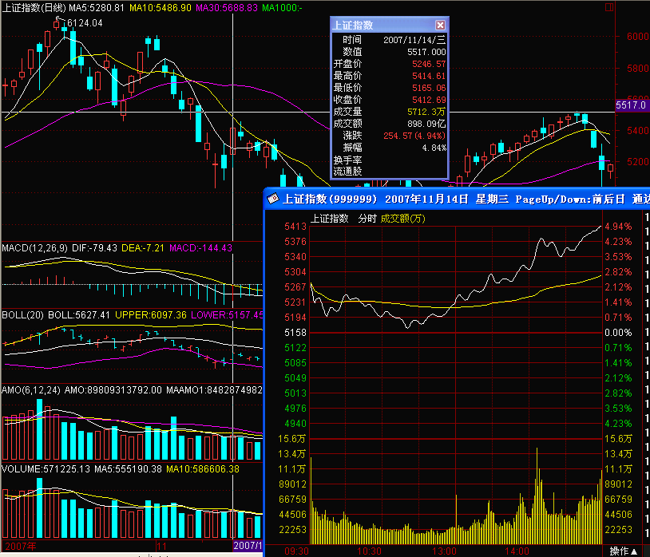
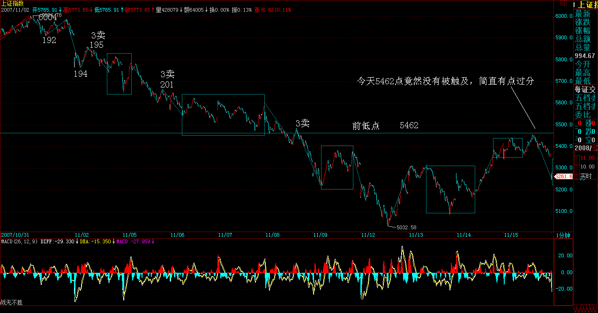
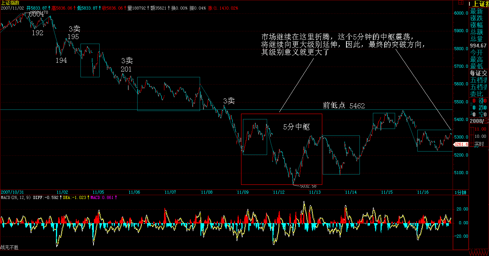

|
 |
教你炒股票88：图形生长的一个具体案例
(2007-11-06 22:38:43)
本ID的理论，对所有的走势，进行了一个最明确的分解，所有的分解，本质上只有两类，就是延续与转折，用残酷一点的词语，就是生和死。
一个走势类型的死，必然意味着一个走势类型的生，走势，就在这样一个生死的轮回中，如同众生的生命，生死轮回不断。看明白了股票的走势，对人生，也大概应该有点领悟了。
一个走势类型确立后，同时就确认了前一个走势类型的死，同时也开始了自己面向死亡的生存。
如同众生的轮回生死，在死与生之间，有一段被称为中阴身的阶段，股票的走势，同样存在着这个阶段。如果说前一个走势类型的背驰或盘整背驰宣告了前一个走势类型的死亡，那么到新的走势类型确立，这里有一个模糊的如同中阴般的阶段。
要把握这阶段的走势，必须把前一段走势的部分走势结合起来分析。也就是说，前一段走势的业力在发挥着作用，这个业力与市场当下的新合力构成了最终决定市场方向的最终合力。
用一个例子，就很好地能说明这个问题。
下图中，191的背弛宣告前一走势类型的死亡。按道理，新的走势类型，是从191开始分析的，但这时候，新的走势类型连第一段线段都没走出来，甚至走到193的位置，也依然轮廓不明，因此，这时候，就是典型的中阴身阶段，必须借助前面189开始形成的中枢来完成分析与相应的操作。
如果从191开始，192、193都很难说有什么可依据的。当然，可以说193就是第二类卖点，这个自然没错，但站在189开始中枢的角度，这就存在一个中枢震荡的问题，这样，这个干瘪的第二类卖点，就有一个更大的可依靠的分析基础。一切关于中枢震荡的分析，都可以利用到关于192、193以及后面走势的分析中，这等于有了双重的分析保证。
当然，后面的195的第三类卖点，也是站在中阴阶段的角度说的。但这一点是一个中阴阶段与新的走势类型确立阶段的分界点，195出来以后，新的走势类型最开始的形态就确立了，也就是至少是一个线段的类下跌走势。这时候，分析的重心，就可以移到191开始的新走势类型上了。这时候，就可以基本在这个线段级别上，不用考虑191之前的事情。
但191之前的走势并不是没有用了，而是在更大级别上，例如在1分钟、5分钟等等级别上发挥作用了。191后面出现的走势，就和191之前的，结合出大级别的走势形态。
因此，当各位熟练以后，标记上就不一定要不断地标记下去了，例如，如果你是按1分钟级别操作的，那么，前面191个线段记号，可能就可以一下简化为10个不到的1分钟级别相关的记号。当191后面的走势演化出的1分钟走势结束后，这1分钟级别的记号才再增加一个，这样，记号的数目就很有限了。当然，如果是5分钟级别、30分钟、日线等等，就更少了。
为了方便明确起见，还是把记号的级别进行分类，例如，用Xn代表线段的记号，用Yn代表1分钟的级别，Wn代表5分钟的记号，Sn代表30分钟记号。日、周、月、季、年，分别也可以用Rn、Zn、Mn、Jn、Nn来表示。其中的n都是具体的数字，这样，所有的走势，都可以被这个标号体系所标记而清楚异常了。
例如，对于191这个点位，站在线段上，就是X191的标号，站在1分钟级别，可能就是某个Yn的标号，而189这个点，就只有线段的标号，这同时也显示了，191这点和189点的重要性是不同的。
什么是最牛的点？就是从线段一直到年，同时都有标号的那个点，如果是顶，那就是百年大顶，当然，是否有幸碰到这样的点，就看各位的运气了。
这个标号体系，不单单为了方便阅读、记号，首先就培养了各位一种综合的、系统的习惯。看一个走势，就要知道，不是单单是一个线段，而是在一个大的多层次系统里，这样才不会被每天的波动所迷失。
其次，这个标记的过程，意味着什么？既然线段有中阴阶段，那么其他级别当然也有。所以无论任何级别，在一个顶点出来后，都有对应级别长度的中阴阶段。
注意，一定要注意。为什么很多人逃了顶，最后还是被套住了；抄了底，最终还是没赚到钱，被震出来了。这就是被相应级别的中阴阶段给搞死的，而且，越大级别转折后的中阴阶段，越能搞死人。
就如同人的中阴，非人非鬼；行情走势的中阴阶段，也是多空齐杀，不断折腾转换。等最后转折确认时，就如同已经重新投胎，饭熟了，还找米，能有戏吗？
有些蠢人，经常在行情转折的中阴阶段，觉得世界又美好了，或者世界又恶劣了，结果都是被业力所牵引。
中阴阶段，无一例外，都是表现为不同级别的盘整（注意，这是只从截取这一阶段的形态说，并不是说新的走势类型一定是盘整）。也就是围绕前一走势的某一部分所构成的中枢震荡，即使是所谓的V型反转，也一样，只是震荡的区域回得更深而已。
其实任何转折，也就是第一类买卖点之后，都对应着某一级别的V型反转，例如，191的转折，190-191与191-192，其实就是一个V型反转，只是级别特别小。这个V型反转的级别，决定了中阴的级别与力度。例如，站在日线图上看6124点前后N天的走势，其实就是某级别的V型反转，然后就同时进入中阴阶段。
注意，中阴阶段结束后，不一定就是真正的反转，也可以是继续延续前一走势类型的方向，例如上涨+盘整+上涨，这样的结构是完全合理的。例如，人的中阴后，不一定就要变鬼之类的，也可以成所谓的神仙，如果你前一世是从鬼来的，鬼到人是上涨，中阴盘整后，从人到神仙，也是上涨。
但，上涨+盘整+下跌，上涨+下跌等等，同样是可能的选择。这时候，唯一正确的操作，只有一点：如果你技术好的，就在这个大的中枢震荡中中枢震荡操作一把，如果技术不好的，就拿着小板凳看戏，看它最后是升天还是下地狱，等市场自己去选择，然后再决定操作。
不过，站在本ID理论的角度，最大效率的，就是利用这个震荡去中枢震荡操作一把，学了本ID理论，就是要把技术练好，练好了，就自然不用整天小板凳了，上台自己票友一把不是更爽？
当然，没这本事的时候，还是别玩这一招，为什么？这就如同，在中阴身的阶段，还是可以去修炼去证悟，但你总不能因此说，我现在就不修炼了，等中阴再说。真等那时候，业力牵引着，你修什么鬼呀。
所以，有真本事，什么情况都不怕，都可以折腾。关键，是要有真本事。
88（回复）
5555点决战即将进入临界点
(2007-11-07 15:26:47)
这个题目有点名不副实，因为这决战，对于空头来说，只是小战役，结果并不重要；但对于多头来说，就是决定生死存亡的。从6124点开始的行情转折中阴阶段，对于多头是垂死挣扎一下，还是干脆破罐子破摔，早死早投胎，很快，准确地说，最迟下周一前后就有答案了。
站在空头立场，本ID希望多头能挣扎挣扎，这样，会增加很多残忍的快感；当然，站在纯技术探讨的角度，多头最好的招数就是以退为进，用一个空头陷阱，把主动进攻的空头给废了。
由于目前的空头比较蠢，所以本ID不妨提醒，屠杀之前，一定要多点多头色彩，披着多头外衣的空头才是最有杀伤力的，在5555点上制造出一个大点级别中枢，然后再背后来一刀，把多头砍倒，踢下悬崖。
由于目前多头也比较蠢，所以本ID也不妨教教多头招数。从月线上，无非两种可能，就是本月确认顶分型，或者不确认。不确认，就是有包含关系或创新高。而目前5462点，就是这个顶分型是否成立的关键，而跌破成立后，最关键是5月均线，目前在5300点附近。也就是说，多头完全可以在5月均线附近埋伏大部队，让空头先进攻，把分型给搞出来，然后反手把主动进攻的空头给废掉。
请回想一下，本ID在3600点，是如何完美地利用顶分型与5月均线来把空头给灭了。现在多头最完美的策略，依然是照搬本ID的老剧本。
不过，这些蠢蠢的多头，估计抄也抄不成样子，最后，可能还是要和5月均线吻别于狂乱的夜。现在的多头，如果这2年多不被攻破的5月均线竟然给你们弄丢了，那你们也别丢人了。不丢人最好的方法就是：早死早投胎。
有人可能要问：你究竟是多头还是空头，怎么又教多头又教空头如何干？
本ID很明确地说：本ID是那准备杀死空头的空头，一个不准备杀死空头的空头，不是好空头。见顶以后，就是一个空头面向死亡的生存过程。这时候当多头，将被空头蹂躏，而空头的命运，最终都是死。所以，唯一正确的就是，当一个随时准备把空头搞死的空头，里面的道理深着了，明白了，你对市场就有更深一步的了解。
短线技术上，5555点附近的新1分钟中枢形成，因此，这次6004点开始的走势，就明确形成1分钟的下跌形态，因此，短线该位置能否站住，就看这个中枢的表现了，看明白这个中枢后面的发展，也就看明白了这场多空拉锯的短线胜负了。
本ID的观点还是很明确，就是在这样一个中阴阶段，什么事情都可能发生，技术好的，可以充分利用这大型的中枢震荡玩抽血游戏。多空越分歧，意味着震荡的幅度机会越多，就越是本ID理论的天堂。至于没这本事的，就算了。
今天的中石油，如昨天所说，38元上线段底背驰后形成较强反弹，然后形成一个1分钟的中枢在40元上下，这是该股形成的第一个1分钟中枢，因此给后面的操作具有最重要的指导意义。后面的走势无非两种：一、以这1分钟中枢震荡扩展出大的中枢。二、这1分钟中枢不过是1分钟下跌走势的第一个中枢，最终将跌破该中枢形成1分钟中枢下移去完成1分钟级别的下跌。
具体操作，就按实际走势的选择来决定。例如，如果你在今天背驰时介入部分仓位的，就可以开始利用后面走势的波动，把成本逐步降低。
最近天天说石油，主要是以此为基础，从最开始把一个股票的走势的生长是如何演进的给教科书一番，各位顺便就可以看到，个股的分析和大盘的分析没什么不同，都一样的。
今天下午晚上都有事，明天收盘马上有事，解盘要到晚上了，先说明一下。
先下，再见。
如期决战，多头不堪一击
(2007-11-08 22:21:05)
对不起，回来晚了，把解盘补上。
昨天说，决战进入临界点，最迟周一有结果。结果是，多头如此不堪一击，太令人失望了。这证明了本ID的一个断言：空头是心急的。而昨天，本ID给多头编的5月均线大埋伏剧本，是否如本ID所担心的那样：“这些蠢蠢的多头，估计抄也抄不成样子，最后，可能还是要和5月均线吻别于狂乱的夜”，很快也有答案了。
前几天，还有多头叫嚣，质问本ID不是说要至少跌1000点吗，为什么还不跌？现在，这个本ID布置的任务，确实有点没完成，本ID对演员们的表现也很不满意，那就继续努力吧。别心急，小板凳坐好，别到处跑动，现在，1000点只完成了800点，空头多头演员们，努力！加油！
现在，5462点到5555点颈线位置，将是中线反抽最关键的位置，不能重新上去，那么跌势将持续到这跌的业力耗尽的一天，本ID可从来没说过1000点外就没有空间，本ID只是说，没有1000点的回跌空间，这做空不过瘾，没空间，不好玩。所以，1000点这小康水平达到后，我们还可以有更高的现代化目标，这难道有什么问题？
今天不爽的，基本上有两种人：一、牛人，觉得自己很牛，可以短线，有天赋。本ID说认清自己，冷静加冷静。认清什么？就是你是不是牛人。牛人，不在乎什么线，但不是，就别累着自己。本ID不早给了所有非牛人一个最好的选择：小板凳？二、大牛人。这种人，以被套为光荣，号称牛市就要中长线，就要持有。就算那股票从300到3元，也要持有，也要中长线，这种大牛人，本ID没什么可说的。有人喜欢电梯，上上下下享受，本ID一点意见都没有，慢慢享受去吧，还有你爽的时候。
明天、周一，5月均线能否有埋伏，埋伏能否有效，很快就有答案了。如果是本ID搞的，本ID当然有信心，但现在，本ID又不当多头了，和3600点那时候不同了，本ID可不想为任何人担保什么。
现在，多头短线的问题，是这次跌破，是否能尽快拉回去，否则，一旦确认颈线跌破，那么，按照双顶的量度跌幅，你觉得该到哪里呢？
本ID很想仁慈地安慰一下今天受苦的人，但本ID最终决定还是不这样干，因为这样只能害人。市场从来不仁慈，本ID该说的也早说了，既然，今天痛苦的，都是大小牛人，那么就继续梅花香自苦寒来去吧，这大概是牛人爱干的活。
如果想真学点什么的，请复习一下本ID这帖子”
2007年末，资金与政策博弈下的走势分析 2007-09-17 00:41:48
”，如果能学点什么，本ID觉得，就没必要学梅花了。股市里，不需要学梅花，不需要苦寒来，股市只需要智慧。
技术高的，可以关注这6004点开始的1分钟下跌的背驰，然后将有一个大反弹；如果技术不高的，还是继续小板凳吧。
先下，再见。
5月均线大埋伏剧本如期上演
(2007-11-09 15:20:08)
今天行情没什么可说的，就本ID前两天已经公布的5月均线大埋伏剧本的现场版。不过，说老实话，同样的剧本，不同的导演，效果当然是不同。今天这种演出水平，显然不是太令人满意的，所以本ID一早就给了一个定性：“这些蠢蠢的多头，估计抄也抄不成样子”，至于是否会“最后，可能还是要和5月均线吻别于狂乱的夜”，很快也会有答案了。
当然，在这个答案出来之前，无论答案如何，都会有一个对前面5462-5555点颈线位置的反抽确认过程，这是例行手续，能重新上去，就证明多头这次的5月均线大埋伏剧本没演砸，否则，这戏就要退票，重新开始空头的魔兽表演。
空头这头魔兽，最终肯定要被本ID砍了劈了，但如果多头不争气，剧本演砸了，首先被砍被劈的一定就是多头。
本ID这种要砍死空头的空头，目前最爱干的事情就是，多头伏击时，本ID也在后面伏击着，多头掩杀，本ID就跟着呐喊，等多头冲得没力，空头开始反击，本ID就在后面连续绞杀，把多头变成少头。
有人可能说，你这样也太无耻了。本ID只知道，在资本市场里，最无耻的行为就是亏钱、被套，只要你在市场上，远离这种行为，那你自然就是一个高尚的人、脱离了低级趣味的人，可以鄙视所有宣称你无耻的人的人。
这如同打仗，蒋光头就是最无耻的人，占尽优势最终还被赶到岛上洗海水浴去了，这世界上还有比这更无耻的吗？无论多少无耻的人给他找一万条无耻的理由，也改变不了他是最无耻的结论。打仗，最终只看结果，别说任何理由。输了，磨墙去，JJWW没用。
市场比打仗更无情，打仗输了，还会有无耻文人，忽悠点这英雄那豪杰的，蒙骗一下少年儿童。市场输了，连尸骨都不会有人替你收。有人喜欢温情，喜欢有人说软话温暖一下破碎的心，那是有病。这种人，在市场中永远只有一种命运：死。
中石油在38附近又有一个新的1分钟中枢，不过这个中枢与上面一个太近了，极有可能就2合一地扩展成更大级别的中枢，当然，实际走势，由市场决定。
大盘没什么可说的，5月均线埋伏后，就看反抽力度，十分简单，没必要多说了。
个股方面，由于人气涣散，最近能逆市的，更多是小市值的低价股，年未，重组闹剧又到上演的时候，这是可多多关注的。至于，中字头，一定还是市场的重心，不过一定要踏稳节奏才可以去短差，否则就会被人绞杀。
不想说了，一到周末，股票就成了最无趣的东西。周末，腐败去，发展晚上经济去、为吃喝玩乐经济贡献去，千万别股票去了。如果什么都不想干，就打坐吧。
先下，再见。
1000点小康跌幅胜利完成
(2007-11-12 15:28:57)
本ID宣布做空时说，没有1000点的下跌空间，不爽，所以要先拉出空间来。今天，1000点的基本任务已经胜利完成，本ID在前面已经给了这个跌幅一个名字，叫小康水平的跌幅。请问，各位是希望下一步小康就算了，还是要继续富裕下去？
今天，5月均线大埋伏剧本继续演绎，今天的利空，刚好为6004点下来的1分钟下跌构成底背驰做出最后的贡献。本ID已经早说了，6004点下来的1分钟下跌一旦背驰，会出现较大级别反弹。现在，5月均线大埋伏剧本与1分钟下跌背驰剧本最终两剧合一。
注意，这个1分钟下跌，搞出来了三个中枢，然后在今天一个完美的底背驰。最后的一个1分钟中枢的第三类卖点，就是早上的补缺失败走势，然后继续的下跌构成了线段的类背驰，这和1分钟大走势的背驰段构成完美的区间套，这么教科书的走势，请好好去研究。
1分钟底背驰后，最基本的涨幅，就是拉回原来1分钟下跌的最后一个1分钟中枢的波动区间，这个在今天就达到了，后面就是这个中枢如何扩展出5分钟中枢的问题。技术上，就要关注这个5分钟中枢的位置以及后面相应的中枢震荡结果。
通俗地说，如果大家都觉得短线小康就算了，不要富裕了，就让这5分钟中枢第三买点；否则，大家都急切奔向富裕，那这5分钟中枢将第三卖点；事情就这么简单，各位民主一把，投票吧。
更通俗地说，就是以5月均线陷阱对5462-5555点颈线的例行反抽继续展开，注意，反抽可不一定要一定碰到5462上，最弱的反抽，就是装模作样在颈线下面折腾几天，然后就和5月均线吻别于狂乱的夜。
当然，多头现在也不是完全没希望，多头要成功，首先是要让所有人只要小康、不要富裕；其次，好好利用5月均线大埋伏剧本，绝对不让那狂乱的夜发生，特别不能让狂乱的月圆之夜发生；最后，找准机会，重新回到5462-5555点颈线之上站稳。
以上，是多头唯一可以走得通的路，鲁男人说，人走多了，就成了路。多头就从这一刻起，如果要活命，就要不断地到处乱踩，把所有板块都踩一遍，看能不能走出路来。
这句话，通俗的意思就是，反弹如果真能延续，必定以板块轮动的方式，这种方式，好听地说，就是为了聚拢人气，不好听地说，就是忽悠蒙骗点新的站岗者。
特别强调，并不是任何反弹都是任何人有资格玩的。站在本ID理论的角度，这个反弹完全可以就已经结束了，为什么？因为最基本的回抽最后一个中枢的幅度已经达到，所以，现在关键是回来那一下能否构成第二类买点，如果不行，那狂乱的夜的吻别就马上上演，不过，更适当的名称应该叫：刎别。
今天的解盘，写得太长了，主要是有趣版本与通俗版本都写了，本ID经常用自己的语言写，其实只是为了有趣与简练，但这世上无趣的人太多，本ID就受累点，夹带上通俗版本。
下面给出了6004下来的分段，请仔细研究，里面用绿箭头把三个1分钟中枢的第三类卖点都给标记出来了。按照本ID的理论，最晚的逃命点195处，从第1个绿箭头开始的所谓第三类卖点，其实都没什么意义，这里，只是显示，第三类卖点后，市场是可以多么狠。按本ID的理论，从195逃命的，在214才真正开始值得考虑是否回补。当然，前提是你的操作可以接受1分钟级别的，如果是5分钟以上级别的操作，那还是继续睡觉吧。
214，从191开始的1分钟下跌走势的底背驰，对应着三重的区间套定位，最后一重是213-214之间的线段内部笔之间的定位，其中的精确性，教科书一般，关键是你能真明白，并且能当下去把握。
好好研究吧，这可能比讨论小康好还是富裕好更有意义。
本ID要出差了，晚上飞机走，晚上的帖子肯定写不了，明天收盘再解盘。不过，在外地，时间上可能不能太准时。另外，后面几天的晚上帖子，估计很难完全保证，因为应酬肯定少不了，又要为茅台、五粮液大大贡献一把了。
最后，一句话，请问：要小康还要富裕？
先下，再见。
市场总是少数人成功
(2007-11-13 08:27:42)
本ID开始课程时，有人还问一个很傻的问题，一旦都掌握了本ID的理论，那理论还有用吗？这种想法，就如同那种同样傻忽忽的逻辑，人人都有共产主义思想，这共产主义就实现了。可惜，共产主义和什么思想没关系，把老马的伟大堕落成培养共产主义新人的可笑，这就是这种逻辑的历史悲剧。
市场总是少数人成功，为什么？因为只有少数人能真正把握自己。征服世界，并不意味着你能把握自己。认识自己、把握自己，这比征服世界更难。
当然，站在市场逻辑的角度，没必要为那些待宰的羔羊而煽情。问题是，最重要的问题是，千万别把自己往羔羊里挤。因此，本ID也只能抱着能惊醒一个是一个的心态。
没有人天生是羔羊，是你的心、你的眼界、你的行为让你羔羊。不修炼自己，不在市场中磨练，羔羊永远只能是羔羊。
一个1000点，10%几的回调，已经让这么多人方寸大乱，以前随便就是50%、60%的调整，那不就真要尸横遍野了？该来的，总要来，市场的重新真正走强，一定是在清理了该清理的之后，就像河道被淤积了，不清理，能行吗？
目前只是大牛市第一阶段的一个中级调整，这一点从来没有任何的疑义。而本ID以前说过的股票，没有一只会放弃的，等中级调整结束，会再度启动，而且有些已经开始预热，这也是很显然的。但调整，首先必须先面对，这是当下的事，先处理好。
按照市场的节奏，6004点跑掉的，昨天开始回补闹一闹反弹，反弹一旦结束，就砸出去，没什么可犹豫的。图形告诉你一切，反弹是否结束，一切尽在走势中。
关键是，你的心能如明镜一样，当下地映射出行情的真实走势吗？
下午收盘，马上有事，有时间再把解盘给出。
在外面，只能如此，尽量在宴会前给出解盘，否则，晚上回来估计也没可能写东西了。
人世皆苦，才有修行的可能。
有苦，真好。
5日线受阻，多头仍需努力。
(2007-11-13 15:06:24)
快速说几句。
今天反弹受阻5日线,这是最简单的走势,按本ID的理论,分型成立后是否能延伸为笔,关键是看5日线,只要不能重上,那么这个底分型就有破坏的可能。当然，一般这底分型即使真的被破坏，也会在不远处形成新的能最终形成笔的底分型，所以，多头还是有短线希望的，只是过程可能有点多灾多难，例如，今天中午传出的CPI，就给早上的多头泼了凉水。
但更精确的分析，还是看昨天1分钟底背驰后的中阴走势，刚好课程说到这里，这是一个标准的现场版本，请好好研究，仔细分析。

昨天说了，多头会如鲁男人一样狂踩不同板块去找路，今天下午的回落，很多板块并没有破坏反弹的形态，所以多头还有继续努力的资本的。
短线继续关注5日线，以及1分钟图上的中阴走势演化。技术差的，就继续小板凳，等风和日丽再出来撒野吧。
听说北京今天要下雪，如果是也太无聊了，本ID刚离开，难道就让本ID错过这2007年的第一场雪？
拜托，雪还是别下了。
晚上如果酒后还清醒，就再见吧，否则，还是让本ID去见周公算了。
抱歉，先下。
节奏爽了才是真的爽
(2007-11-14 15:17:22)
对不起，在外面，帖子就不能保证了，请原谅。解盘还是保证的，但也只能快速说说。
昨天说得很明确，就是看5日线，因为昨天刚好构成底分型，所以今天下午一站上5日线，大盘就强烈启动起来，这都是极端教科书的走法，自己好好体会吧。
前两天的1分钟底背驰后，后面是一段中阴走势，各位可以看看本ID的课程里关于为什么很多人抄到了底却拿不住，就是因为不明白中阴走势的处理。更仔细的分析，只能等回北京后写课程时再说了，不过这两天的走势，也很规范，是其中最简单的走势的标准版本，请好好分析一下。

本ID的理论有没有用，从这次下跌到1分钟背驰的把握，到这个反弹的全面处理就是一个很好的例子。这不需要你任何的其他渠道的消息，图形告诉了一切。当然，前提是你看得明白，否则就是对牛弹琴了。
本ID很肯定地给了多头如何利用5月均线对空头进行大埋伏的剧本，看来，多头经过前几天的不熟悉，终于演得有点模样了，给朵大红花。
下面的问题就是5462点重回后能不能站住，站住就有更大的反弹空间。另外，注意期货的消息，如果最近有关于这方面明确的消息，那么指数的走势就会有很大变数，也就是说，指数存在创新高的可能，不过这和绝大多数人无关。
对反弹的把握，如果想懒点的，就看这个日线上的笔最终延伸的结束，如果它有本事延伸到10000点，本ID也没有反对的理由。当它没本事的时候，本ID就把这几天买的拿出来开砸，如此而已。
只要重回5462点上，无论站住与否，都将形成一个大的中枢，所以，中枢震荡一把，折腾一把甚至回来N把，还是很爽的。
个股方面，已经明确说过了，都会被踩一次，但如果期货消息很快出来，那么还是中字头更牛一些。其实，各位看看中驴，就知道方向了，你看这驴，从来都是最聪明的，无论涨跌，哪次不是领先于大盘的？
爽，要有爽的潜质。现在最危险的，反而是这种状况的，就是底部没敢动，反弹N天后忍不住的，站在反弹的角度，反弹往往意味着换岗。本ID现在没什么事，就等着多头没力的时候，把钢枪发给想换岗的了。
所以，节奏是第一位的，节奏爽了，才是真爽。关于利用1分钟走势底背驰进行抄底反弹的操作，已经提醒N天了，不管处理得怎么样，都请好好反省，这样才会有真的进步。
先下，再见。
对不起，解盘晚了。
(2007-11-15 21:47:45)
对不起，解盘晚了。今天一收盘，就给抓去看企业，书记亲自出面,你说有什么办法?来到下面，个个人都急着，把你当点石成金的圣手，苦呀，没办法，各位也请原谅。
本ID现在可是喝了1斤多五粮液后说的话，虽然相当清醒，但各位也知道，本ID这收盘后的N小时内受到的苦是多么的深切。苦呀,苦。
今天5462点竟然没有被触及，简直有点过分。喝了点酒，本ID也真要狂言一句，没有本ID的多头，就是阳痿的货。连5462点都不碰，多头难道想找死吗？本ID现在酒后胡言，但不骂他们也不爽了。

今后几天，首先站上5462点，让本ID觉得多头还有点男人的器官，否则，本ID以后就宣告多头根本没头，都是中关村的货色，多头也没什么可抱怨的。
这里，先说明一个典故，估计北京外的人都不知道。中关村，其实是中官村，中官，就是太监，中国的第一所谓科技村，竟然就是历史上的太监村，你说要哭还是笑？
喝多了，也没必要技术什么了，5462点，多头，想证明你们不是中关村的，就给搞上去，否则，后面本ID的题目就是：多头，都是中关村的货。
对不起，思维混乱，明天估计也没机会解盘了，周六回北京再补上。
北京，不总是中关村的。让中关村的太监太监去吧。北京爷们，请爷们一下，别让本ID看不起你们。
洗洗睡吧，讨厌五粮液，最恶心的酒。
下了，周六见。
多头，不要争当中关村的货。
(2007-11-16 15:25:28)
快速说两句，明天就回北京了，不知道雪下了没有？
北京有中关村，多头，也不要争当中关村的货，北京可不止中关村。5462点，连这都如此困难重重，本ID都没了骂多头的兴趣了。
这次出差，本ID还是深切感到了中国企业的创业热情。虽然，有些手段，有点太那个了。例如，本ID这几天考察的企业里，就有从世界性大公司出来，用完全盗用的技术，改头换脸地疯狂发展出来的。虽然本ID并不特反感这种企业，但这毕竟不是长久的办法，中国人有足够的脑子，为什么一定要盗用鬼佬的？
市场继续在这里折腾，这个5分钟的中枢震荡，将继续向更大级别延伸，因此，最终的突破方向，其级别意义就更大了，暂时，估计还需要一定的时间。

个股方面，依然是乱踩走势，暂时不会有太多板块具有持续的走强能力，总之，就是来回折腾。
不说了，周末，本ID还要熬上最后一晚的饯行酒，明天就回北京了。
先下，再见。
|
|
|
|